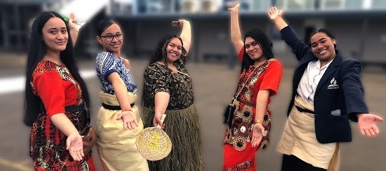
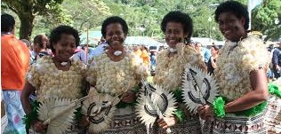
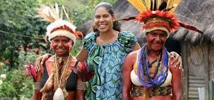
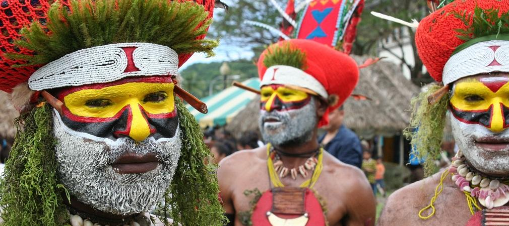

Teenagers of Pacific heritage who distance themselves from their culture often face heightened identity stress and reduced psychological wellbeing. Studies using the Pacific Identity and Wellbeing Scale (PIWBS) show that identifying with Pacific groups strongly supports feelings of belonging, self esteem, and emotional resilience, whereas identity confusion such as identifying with both Pacific and non Pacific groups can correlate with lower well being and negative self perception.Teens who are less connected to their Pacific culture are more susceptible to online harms like cyberbullying, privacy breaches, and encountering explicit content with research showing Pacific youth in NewZealand face these risks at higher rates compared to their peers, even as digital spaces also offer avenues to maintain long distance cultural ties . At the same time, technology can be a vital resource: Pacific adolescents often turn to online platforms and forums to manage mental distress, find peer support, and express themselves more authentically than they might offline but many report insufficient culturally aligned representation and worry about privacy and etiquette online




Conversely, digital communities and creative tech initiatives can help reconnect hiding or distanced Pacific youth with their heritage in meaningful ways. For example, the KPOLYS documentary highlights how Pacific teenagers in Aotearoa New Zealand have embraced K pop as a community that affirms identity, supports self expression, and sometimes even leads them back to rediscovering their Pasifika culture. Initiatives like Rotorua’s Digital Natives Academy provide culturally responsive tech education—teaching coding, digital art, robotics and wellbeing tools—to Māori and Pasifika youth, blending cultural values with creative digital skills . By offering spaces where tech and cultural identity coexist, these efforts empower teens to reclaim their heritage rather than conceal it, fostering pride and belonging through contemporary digital expression.